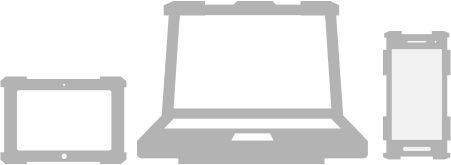
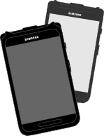
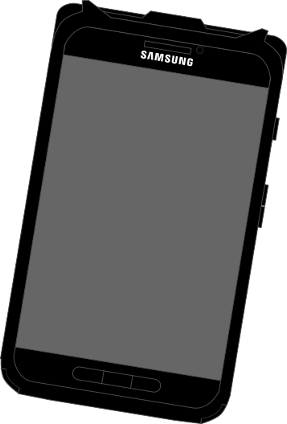
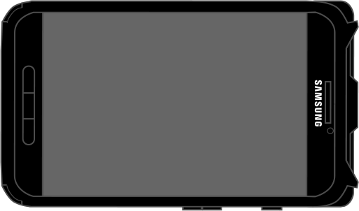

While tablets have secured a place in the enterprise, not all tablets are an ideal match for the durability and reliability challenges posed by some industry tasks and environments. That’s why rugged tablets like the Samsung Galaxy 4 Active have become essential to a host of critical sectors in the global economy of today.
A GROWING MARKET: RUGGEDIZED DEVICES

Rugged device market in 2013
$4.1 Billion1

The strongest performing rugged devices were the rugged tablets which
grew by 22%
from 2012-20131
Total Sales of ruggedized data devices for 2014 :
30 Million Units22
44%
of service organizations say that mobile field service is required due to competitive pressures 3
WHICH DEVICE FORM FACTORS DO YOU PLAN TO CONSIDER AT YOUR NEXT REFRESH?4
-
10%
Consumer-grade
Handhelds/
smartphones -
19%
Rugged
Handhelds/
smartphones -
25%
Rugged
Tablet -
42%
Consumer-grade
Tablets -
58%
Stick with
Laptops
RUGGED DRIVERS
-
Maximizing Performance and Productivity of Workforce
-
Improving Customer Satisfaction
-
Reducing Costs4
In 2013, consumer tablets accounted for
89%
of the 217.1 million tablets shipped worldwide, according to market research firm IDC.
Still, the enterprise share of the tablet market is increasing.
The 11% share enterprise tablets held in 2013 will grow to 18% share by 2018, IDC predicts.
Solutions and Devices built with business in mind from Samsung
Samsung’s GALAXY Tab Active, is first tablet crafted specifically for the rugged, always-on business demands of some industrial users. The tablet’s durable design and feature set delivers robust security and flexibility to enhance employee productivity in any working environment.
Rugged Tablet “Must-Haves” Included in the GALAXY Tab Active:
-  
- Environmental hardness The tablet can survive drops to a hard surface up to 1.2 meters with the protective cover on; it has an IP67 rating for strong protection against dust and water penetration; and it can function across a broad temperature range.
- VIEWABILITY The tablet uses an anti-reflex non-glare screen for visibility in direct sunlight.
- BATTERY The tablet offers an ultra-power-saving mode, a user detachable and |replaceable battery, and also supports simple Pogo pin charging.
- CONNECTIVITY The tablet supports 3G/4G cellular, Wi-Fi and NFC networking for device pairing and tag reading.
- DESIGN Although built for tough environments, the reinforced tablet sports an attractive design, a non-slip exterior coating. The 9.75 mm-thick tablet (0.38 inches) weighs just 393 grams (0.84 pounds).
- BARCODE SCANNING The tablet includes a 3.1-megaixel auto-focus camera with a flash feature to support barcode scanning and other tasks.
- SECURITY The tablet features integrated Samsung KNOX technology for hardware and software security, including on-device containerization, identity access management and data encryption, and can leverage KNOX EMM, a cloud-based enterprise mobile management system.